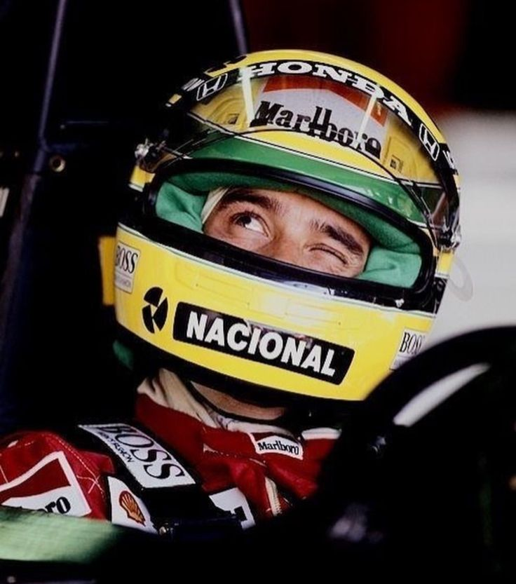
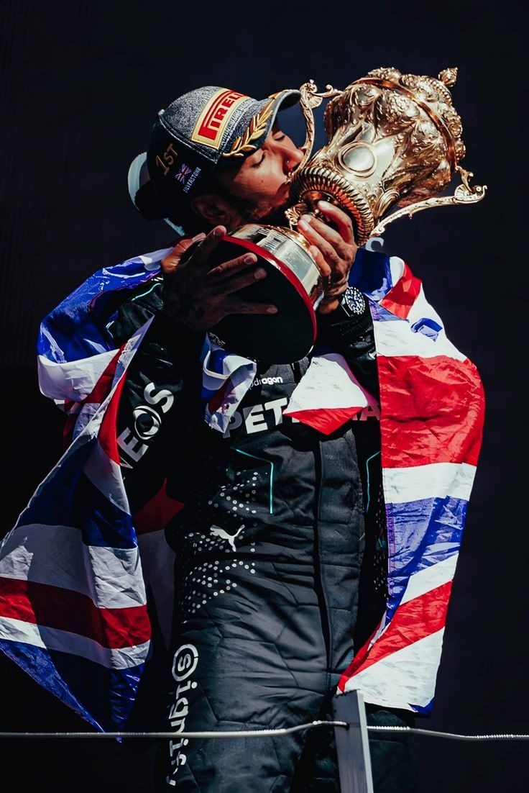
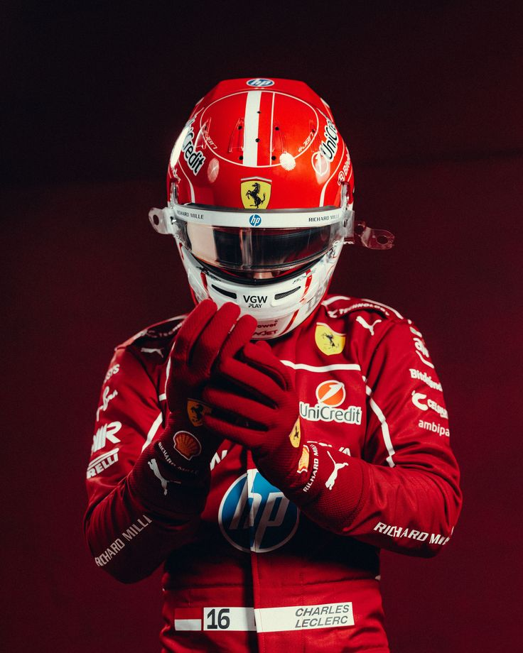

Trajetórias que marcaram a história
Do nascimento à lenda — quatro vidas, quatro legados

Fórmula 1 · 1960 — 1994
Tricampeão mundial de F1. O piloto mais rápido sob a chuva. Uma lenda que transcendeu o esporte e tornou-se patrimônio da humanidade.
Conquistas
Trajetória
Ayrton Senna da Silva nasce no bairro do Brooklin, São Paulo. Filho de Milton e Neide Senna, cresce numa família de classe média alta com uma relação precoce e instintiva com motores.
Recebe um kart adaptado por seu pai. A precisão e a intuição em pista já encantavam todos que o viam — algo que especialistas descreveram como instinto puro e inato.
Deixa o Brasil para a Inglaterra e conquista a Fórmula Ford 1600 no primeiro ano, seguida da F3 — revelando um talento que o paddock europeu nunca vira antes.
Estreia pela Toleman. No GP de Mônaco sob chuva, recupera posições de forma sobrenatural e ameaça ultrapassar Prost quando a corrida é encerrada — o mundo havia descoberto algo extraordinário.
Na McLaren-Honda, vence 8 das 16 corridas numa temporada de dominância histórica. Início da maior rivalidade do automobilismo: o "Professor" Prost vs. o apaixonado "Mágico".
Terceiro título conquistado com maestria. Vence o GP do Brasil e chora no pódio diante de sua nação — uma das imagens mais tocantes da história do esporte.
No GP da Europa, larga em 5.º e ultrapassa cinco carros numa única volta sob chuva para assumir a liderança. Unanimemente considerada a maior volta de corrida da história.
Senna sofre um acidente fatal na curva Tamburello durante o GP de San Marino. Morre aos 34 anos. O Brasil entrou em luto, a F1 jamais voltou a ser a mesma — mas sua alma ainda acelera em cada pista do mundo.
Rivalidades & Conexões
A maior rivalidade da F1. O "Professor" contra o "Mágico" — dois estilos opostos que polarizaram o mundo do automobilismo por anos.
Rivalidade marcante em pista. Mansell frequentemente entrou em conflito direto com Senna — tanto no asfalto quanto nos bastidores do paddock.
Senna sempre sonhou em correr pela Williams. Em 1994, finalmente realizou o sonho — tragicamente, na última equipe que pilotaria.
O verdadeiro legado de Ayrton. Já beneficiou mais de 20 milhões de crianças no Brasil com educação de qualidade.
Análise & Opinião
Ayrton Senna não era apenas o piloto mais rápido de sua era — era uma força da natureza. Sua combinação de talento absoluto, profundidade psicológica e humanidade tocante colocou-o numa dimensão que pouquíssimos atletas já habitaram.
Em pista molhada, tornava-se literalmente intocável — uma característica que os especialistas concordam ser incomparável na história do automobilismo. A volta de Donington em 1993 e o GP de Mônaco de 1984 permanecem como as maiores obras-primas de pilotagem já realizadas.
Além da velocidade, havia uma profundidade emocional rara. Senna chorava, rezava e falava sobre Deus e a morte com franqueza desconcertante. Essa vulnerabilidade o tornou humano — e, paradoxalmente, ainda maior.
Trinta anos após Ímola, seu nome ainda arranca lágrimas no Brasil. Isso diz tudo sobre o que significa uma lenda verdadeira.

Fórmula 1 · 1985 — Presente
O maior campeão da história da F1 em títulos e vitórias. Pioneiro, ativista, artista. Redefiniu o que significa ser um piloto no século XXI.
Conquistas
Trajetória
Lewis Carl Davidson Hamilton nasce em Stevenage, Hertfordshire. Filho de Anthony Hamilton, de origem jamaicana. A família tem recursos limitados — o pai trabalhará múltiplos empregos para financiar o sonho do filho.
Aos 8 anos, aborda Ron Dennis numa cerimônia e pede para ser piloto da McLaren. Dennis anota num guardanapo — e, contra todo o esperado, cumpre a promessa.
Estreia na McLaren e quase vence o campeonato já no primeiro ano. Perde o título por apenas 1 ponto para Räikkönen no último GP — a performance de um novato jamais vista na F1.
Conquista o campeonato na última volta do último GP no Brasil, ultrapassando Glock para ficar em 5.º e garantir o título por 1 ponto sobre Massa. Cenas históricas.
Após assinar com a Mercedes em 2013 — decisão ridicularizada na época — conquista seis títulos mundiais (2014, 2015, 2017, 2018, 2019, 2020), superando o recorde histórico de Schumacher.
Perde o 8.º título para Verstappen na última volta do último GP, após decisão controversa da direção de corrida — gerando o maior debate da história moderna da F1.
Assina com a Ferrari em 2025, ao lado de Leclerc, realizando o sonho de todo piloto. A temporada foi difícil, mas o 8.º título histórico continua sendo o objetivo para 2026.
Rivalidades & Conexões
Companheiro de equipe e rival interno. Rosberg venceu o campeonato de 2016 numa batalha que quase destruiu a Mercedes por dentro — e logo depois se aposentou.
A rivalidade da nova geração. 2021 produziu as cenas mais eletrizantes da F1 moderna — e terminou na maior polêmica da história recente do esporte.
Juntos construíram a equipe mais bem-sucedida da F1 moderna — uma parceria baseada em confiança, respeito e ambição compartilhada.
A parceria mais esperada de 2025 na Ferrari. Hamilton jamais fora consistentemente batido por um companheiro de equipe — e Leclerc se manteve à frente durante toda a temporada.
Análise & Opinião
Lewis Hamilton é, numericamente, o maior piloto da história da Fórmula 1. Mas sua grandeza vai muito além dos recordes — ele redefiniu o papel do piloto como agente de mudança cultural e social.
O que mais impressiona é a longevidade. Hamilton manteve-se no topo por quase duas décadas, adaptando seu estilo a cada mudança técnica e regulatória — algo que nenhum outro campeão conseguiu fazer com a mesma consistência.
Ao falar abertamente sobre racismo, identidade e saúde mental, abriu portas que o automobilismo mantinha fechadas há décadas. Isso, talvez, seja seu título mais importante de todos.

Fórmula 1 · Ferrari · 1997 — Presente
Il Predestinato. O menino de Mônaco que cresceu para correr pela Ferrari — e se tornou o líder incontestável da Scuderia. Primeiro monegasco a vencer o GP de Mônaco em 93 anos.
Conquistas
Trajetória
Charles Leclerc nasce em Monte Carlo, Mônaco. Seu pai, Hervé, era piloto de Fórmula 3 — e o amigo da família Jules Bianchi, que se tornaria padrinho de Charles, seria uma grande influência em sua vida e carreira.
Leclerc começou a correr de kart aos cinco anos e rapidamente se estabeleceu como um talento prodigioso. Conquistou múltiplos títulos regionais e nacionais, coroando-os com a Copa do Mundo Júnior de kart em 2011.
Migra para monopostos, terminando em 2.º na Fórmula Renault 2.0 Alps com duas vitórias. Em 2015, avança para o Campeonato Europeu de F3 da FIA, conquistando quatro vitórias e um pódio no histórico GP de Macau.
Ingressa na Ferrari Driver Academy e conquista o título da GP3 Series em seu ano de estreia. Na temporada seguinte, domina a FIA Fórmula 2 — 7 vitórias em corridas principais e 8 poles — tornando-se o primeiro piloto a vencer GP3 e F2 em temporadas de estreia consecutivas.
Faz sua estreia na F1 com a Alfa Romeo Sauber aos 20 anos. Em um carro modesto, terminou notavelmente em 6.º lugar no Azerbaijão, marcou 39 pontos na temporada e superou consistentemente seu companheiro Marcus Ericsson — garantindo a promoção para a Ferrari.
Ingressa na Scuderia Ferrari como o piloto mais jovem em décadas. Conquista a 1.ª vitória em Spa-Francorchamps, dedicando-a ao seu padrinho Jules Bianchi. Segue com vitória histórica em Monza — encerrando 9 anos sem vitória Ferrari — e termina com 10 pódios e 7 poles, superando o tetracampeão Sebastian Vettel.
Com um Ferrari competitivo, Leclerc vence no Bahrein, na Austrália e na Áustria. Lidera o campeonato por semanas, mas falhas mecânicas e erros estratégicos da Ferrari custam-lhe o título — termina vice-campeão atrás de Verstappen.
Vence o GP de Mônaco, tornando-se o primeiro monegasco a vencer a corrida em 93 anos — em sua própria casa. Soma vitórias em Monza (pela 2.ª vez) e Austin, 13 pódios ao total e termina em 3.º no campeonato com o maior número de pontos de sua carreira.
Com a chegada de Lewis Hamilton, Leclerc teve que provar que poderia superar o heptacampeão — e o fez. Manteve-se consistentemente à frente do companheiro durante toda a temporada de 2025, alcançando seu 50.º pódio no GP do México e consolidando-se como o verdadeiro líder da Scuderia. Para 2026, o lema é claro: "É agora ou nunca".
Influências & Conexões
Piloto de F3 e primeira grande inspiração de Charles. Crescer num ambiente automobilístico criou uma ligação natural com a velocidade — e um entendimento único das dificuldades da vida num cockpit.
Amigo da família e padrinho de Charles. Bianchi foi uma inspiração profunda — quando faleceu em 2015, Leclerc dedicou sua primeira vitória na F1 à sua memória, em Spa, em 2019.
O principal rival de sua geração. Em 2022, travaram uma batalha pelo título que durou meio campeonato — até que as falhas mecânicas da Ferrari mudaram o rumo da história.
Em 2024, lançou o EP "Dreamers" em colaboração com o pianista francês Sofiane Pamart — chegando ao #2 no Billboard Classical Albums. Leclerc também compõe sozinho peças de piano inspiradas em cada corrida.
Análise & Opinião
Charles Leclerc é, na visão de muitos especialistas, o piloto mais completo da geração atual quando colocado num carro à altura do seu talento. Sua velocidade em classificação é comparada à de Senna e Hamilton na sua melhor fase — e isso não é exagero.
Crescido em Mônaco, filho de um piloto de F3 e apadrinhado por Jules Bianchi, Leclerc carrega uma ligação com o automobilismo que vai além do profissional. É quase filosófica. Quando venceu o GP de Mônaco em 2024, tornando-se o primeiro monegasco em 93 anos a fazê-lo, a emoção no rosto dele disse tudo que palavras não conseguiriam expressar.
Sua principal fraqueza até agora tem sido o ambiente ao redor: a Ferrari estrategicamente inconsistente custou-lhe vitórias certas em 2022, e um SF-25 aquém das expectativas em 2025 o impediu de brigar pelo título ao lado de Hamilton. O talento está lá — e permanece.
Fora da pista, Leclerc surpreende pela dimensão artística: compõe peças ao piano inspiradas em cada corrida e lançou um EP bem-recebido. É um piloto moderno, multidimensional e com uma história que ainda está no segundo capítulo. O melhor de Charles Leclerc ainda está por vir.
Músico & Compositor · 1998 — Presente
Do Vine ao Madison Square Garden. Filho de mãe inglesa e pai português, Shawn construiu um dos maiores legados do pop moderno com guitarra, autenticidade e uma voz que fala diretamente à sua geração.
Discografia & Conquistas
Família & Origens
Inglesa dedicada ao comércio imobiliário. Karen foi um dos pilares afetivos de Shawn durante a adolescência, acompanhando os primeiros passos da carreira musical do filho ainda muito jovem.
Português e empresário na área de suprimentos para restaurantes em Toronto. Manuel trouxe a herança lusitana ao lar — um dos motivos pelo qual Shawn sempre destacou suas raízes com orgulho.
Irmã caçula, Aaliyah acompanhou de perto o crescimento meteórico do irmão e aparece frequentemente em momentos compartilhados nas redes sociais.
Em casa, cresceu ouvindo reggae, country de Garth Brooks e hard rock do Led Zeppelin. Na adolescência, descobriu John Mayer e Ed Sheeran — suas maiores influências diretas.
Trajetória
Shawn Peter Raul Mendes nasce em Pickering, Ontario. Filho de Karen, inglesa ligada ao mercado imobiliário, e Manuel Mendes, português e empresário de suprimentos para restaurantes em Toronto. Cresce numa família acolhedora com raízes britânicas e lusitanas.
Em janeiro de 2011, cria sua primeira conta no YouTube. Um ano e meio depois publica seu primeiro cover: "Hometown Glory" de Adele. O violão aprendido sozinho por tutoriais começa a ganhar audiência.
Explode no Vine com covers de 6 segundos. Participa da Magcon Tour — iniciativa de Bart Bordelon para promover criadores de vines. Andrew Gertler, da Island Records, o descobre na turnê e se torna seu empresário.
Assina com a Island Records e entra no Top 25 da Billboard Hot 100 com 15 anos — tornando-se o cantor mais jovem a conquistar essa posição. Ganha o Teen Choice Awards como Melhor Estrela Musical da Web.
Álbum de estreia e parceria histórica: abre os shows da megatura "1989" de Taylor Swift. "Stitches" alcança o Top 5 em múltiplos países.
"Treat You Better" torna-se hino global. Em 2017, realiza a Illuminate World Tour, confirmando a transição de internet star para artista de arena.
Álbum #1 em vários países. "In My Blood" vira hino geracional sobre ansiedade, com indicação ao Grammy. Dois shows sold-out no Madison Square Garden confirmam o status de estrela mundial.
"If I Can't Have You" e "Señorita" com Camila Cabello alcançam o #1 na Billboard Hot 100. Realiza a Shawn Mendes: The Tour por todo o mundo.
Cancela sua world tour para cuidar da saúde mental — uma decisão pública que quebra um tabu enorme. Retira-se dos holofotes para se reconstruir e retorna em 2023 mais resiliente, mostrando que autenticidade sempre vence.
Estilo Musical & Colaborações
Destaca-se no pop, mas sempre fez fusões com pop-rock e folk-rock — um diferencial que o separou dos artistas de plataforma de sua geração.
Cresceu ouvindo o que seus pais tocavam: reggae, country de Garth Brooks e hard rock do Led Zeppelin — bases que deram profundidade ao seu som desde o início.
Suas maiores referências pessoais: a guitarra expressiva de Mayer e o storytelling íntimo de Sheeran moldaram diretamente seu estilo de composição.
"Señorita" tornou-se um dos maiores hits do pop moderno, alcançando o #1 em dezenas de países. A química artística que transcendeu para um relacionamento público.
Análise & Opinião
Shawn Mendes é um fenômeno que os algoritmos não conseguem explicar completamente. Sua ascensão partiu do Vine — seis segundos — mas o que o sustentou foi algo que nenhuma plataforma fabrica: talento real e autenticidade genuína.
Filho de uma inglesa e um português, criado ouvindo reggae, Led Zeppelin e Garth Brooks, Shawn construiu uma identidade musical única. Ao descobrir John Mayer e Ed Sheeran na adolescência, encontrou a linguagem para o que sentia — e não parou mais de escrever.
Numa indústria que molda artistas em produtos, ele insistiu em compor suas próprias músicas e falar sobre o que realmente sente. "In My Blood" virou hino para milhões que nunca tiveram palavras para a própria ansiedade.
O capítulo mais corajoso foi a pausa de 2022: ao priorizar a saúde mental sobre contratos e fama, Shawn enviou uma mensagem que transcende a música. Para uma geração que cobra autenticidade, esse pode ser seu legado mais duradouro.